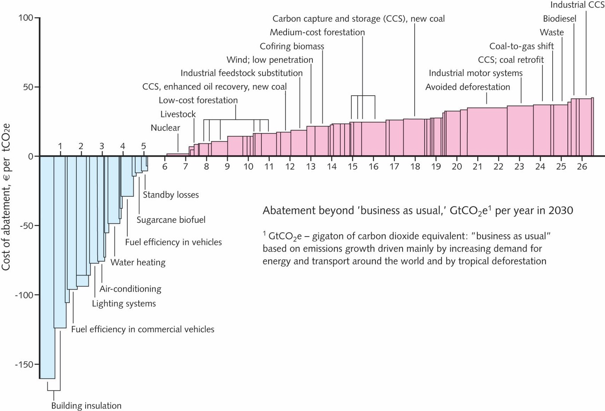
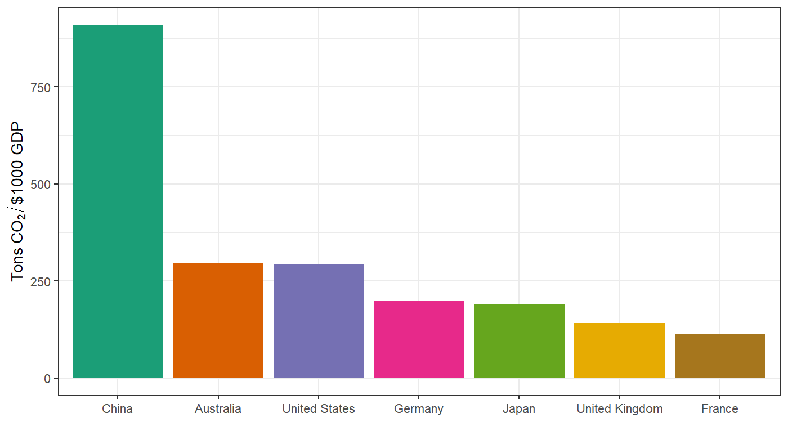
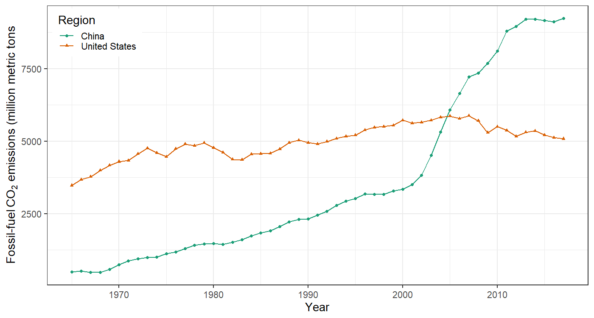
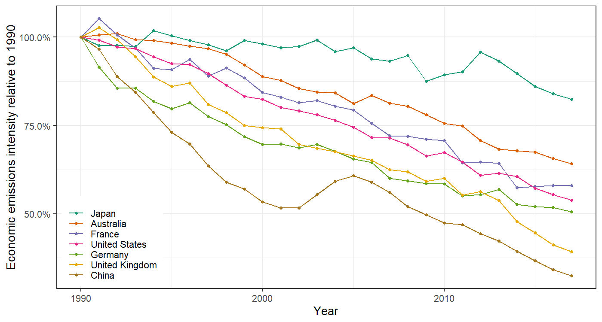

Top-Down Decarbonization
EES 3310/5310
Global Climate Change
Jonathan Gilligan
Class #26:
Monday Oct. 22
2018
Considerations on Projections
of Future Emissions
Grain of Salt
- Implied decarbonization rates depend on predictions of P, G, etc.
- Predicting population and economic growth are very tricky and imprecise.
- So take any of these calculations with a grain of salt.
- But are they still useful, despite the uncertainties?
Detailed Abatement Options

Economic Carbon Intensity in 2017

CO2 Emissions 1965–2017

Relative improvement in carbon intensity 1990–2017

Top-Down Analysis for Australia
Projected Energy Use in 2050
- Energy Information Administration top-down projection for energy demand in Australia in 2050:
- Total 2050 Primary Energy Use = 9.44 Quads
- Assume P, g, and e are fixed.
- Manage emissions by reducing f
- switch from fossil fuels to clean energy
Energy Mix in 2017
| Coal |
1.68 |
30.3 |
| Natural Gas |
1.43 |
25.8 |
| Oil |
2.08 |
37.6 |
| Nuclear |
0.00 |
0.0 |
| Renewables |
0.35 |
6.3 |
| Total |
5.53 |
100.0 |
Emissions Factors
| Coal |
94 |
| Oil |
70 |
| Natural Gas |
53 |
| Nuclear |
0 |
| Renewables |
0 |
Projected Business as Usual Emissions in 2050
| Coal |
30 |
2.86 |
94 |
270 |
| Natural Gas |
26 |
2.44 |
53 |
129 |
| Oil |
38 |
3.55 |
70 |
248 |
| Nuclear |
0 |
0.00 |
0 |
0 |
| Renewables |
6 |
0.60 |
0 |
0 |
| Total |
100 |
9.44 |
NA |
648 |
Top-down emissions-reduction
| Coal |
30 |
2.86 |
94 |
270 |
| Natural Gas |
26 |
2.44 |
53 |
129 |
| Oil |
38 |
3.55 |
70 |
248 |
| Nuclear |
0 |
0.00 |
0 |
0 |
| Renewables |
6 |
0.60 |
0 |
0 |
| Total |
100 |
9.44 |
NA |
648 |
- Projected emissions for 2050 (no change in f ): 578 MMT
- Emissions goal for 2050 = 139 MMT
- Must cut by (578 - 139) = 439 MMT
- Start with coal:
- Cut 270 MMT (2.86 quads)
- 169 MMT left
- Next, cut gas:
- Cut 129 MMT (2.44 quads)
- 40 MMT left
- Finally, cut oil:
- Total energy cuts = 2.86 + 2.44 + 0.57 = 5.87 quads.
Clean Energy Sources
- 11,000 megawatts (MW) for one year = 1 quad
- Nuclear Power Plant:
- 1000 MW × 75.0%% efficiency = 750 MW average
- 1 quad per year = 11,000 MW / (750 MW per nuclear plant)
= 14.7 nuclear plants
- Concentrated Solar Power:
- 10 MW × 33.0%% efficiency = 3 MW average
- 1 quad = 3,300 concentrated solar-thermal plants
- Wind Turbine:
- 2.5 MW × 33.0%% efficiency = 1 MW average
- 1 quad = 13,300 wind turbines
Meeting Australia’s Goal
- Cut CO2 by 439 MMT
- 270 MMT from coal (2.86 quad)
- 129 MMT from gas (2.44 quad)
- 40 MMT from oil (0.57 quad)
- Total clean energy needed: quads per year
- 5.87 quads × 14.7 nuclear plants/quad =
86 nuclear power plants in 33 years
(2.6 per year)
- 5.87 quads × 3,300 concentrated solar plants/quad =
19,365 concentrated solar plants in 33 years
(587 per year, or 11 per week)
- 5.87 quads × 13,300 wind plants/quad =
78,047 wind turbines in 33 years
(2,365 per year, or 6 per day)
Pielke’s Bottom Line
- Unfeasible to build so much clean energy so quickly
- Expense of building so much clean energy would defeat Australia’s economic goals
- This is why we don’t have the technology to decarbonize as quickly as politicians and activists have been promising.
But …
- Australia used 5.53 quads in 2017.
- If it uses 9.44 quads in 2050,
- Extra 3.91 quads
- 14.7 coal-fired power plants per quad
- 57 new coal-fired plants (1.7 new coal plants per year)
- Costs of building new fossil capacity
- Costs of coal, ash disposal, etc.
- Public health: illness, death from air pollution
Bottom-Up Analysis
- Start with individual Kaya-identity variables:
- P, g, e, f
- Figure out historical rates of change for each
- Gross Domestic Product: \(G = P \times g\)
- Rate of change of \(G\): \(r_G = r_P + r_g\)
- Rate of change of a product is the sum of the rates of change of the factors.
- Use rate of change of G to extrapolate G in the future: \[ G(2050) = G(2017) \times exp(r_G \times (2050 - 2017)) \]
Bottom-Up Analysis
- Start with individual Kaya-identity variables
- Gross Domestic Product: \(G = P \times g\)
- Figure out implied rate of change of emissions F:
- Policy: reduce emissions in 2050 60% below 2000: \[ F(2050) = (1 - 0.60) \times F(2000) \]
- Figure out change in F from this year: \[ r_F = \frac{\ln\left(\frac{F(2050)}{F(2017)}\right)}{2050 - 2017} \]
- Figure out implied rate of decarbonizing the economy:
- Carbon intensity of the economy is \(ef = F / G\). \[r_ef = r_F - r_G\]
- Compare implied rate of decarbonization to historical trend to assess the difficulty of meeting the policy goals.
Top-Down Analysis
- Start with macroeconomic estimate of future energy demand E
- Use mix of energy sources and emissions factors to calculate future emissions (F) if the mix of energy sources does not change.
- Calculate policy goal for F the same way as for bottom-up analysis
- (this is purely a comparison of the policy goal to today’s emissions)
- Calculate difference between projected future F and policy goal for F.
- Calculate how many quads of fossil-fuel energy you would have to replace with clean energy to meet the policy goal.
- Start with cutting coal, then cut natural gas, and finally cut oil
- Why?
- Figure out how many power plants of different kinds you would have to build to supply the necessary clean energy.
- Remember that the actual average power output is the nameplate power times the duty factor (also called the efficiency).